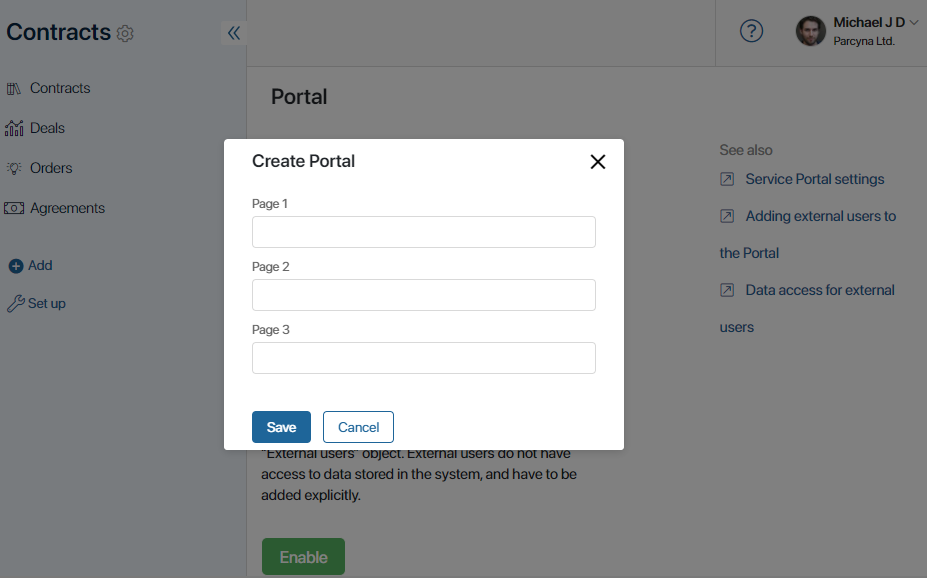

Portal pages are sets of certain data added using widgets. They are set up in the same way as standard pages in the system.
You can create custom pages with app lists, buttons for creating app items and launching business processes, activity streams, etc.
When enabling the portal, you can select its configuration:
- Empty. It consists of the empty home page. You can configure it from scratch, and also create additional pages.
- Use template. It consists of:
- A preconfigured home page with a header and Portal navigation widget, with right, left, and bottom panels for placing information.
- Three empty pages which can be filled with widgets.
Apart from configuring pages intended for working with the portal, you can also customize the appearance of the sign-in, registration, and authentication pages. Read more about it in the Set up the sign-in portal page article.
Set up an empty portal
When you select the Empty option, a Home Page is added to the portal. It cannot be deleted. You can fill it up with widgets or add custom pages. To do this:
- Click the +Page button in the top right corner.
- Come up with a name for the page.
The page’s URL is generated automatically and is used to get quick access to the page.
- Click Create to complete the configuration. After that, the new page is created and you can now fill it up with widgets.
- Click on the page name in the list to open the interface designer. Read more about setting up widgets in Add a widget to a page.
- To apply your settings, save and publish the page
The default Home Page can be customized in the interface designer in the same way as the custom pages you have created.
Use template
The portal template consists of:
- The home page, which contains:
- Page header widget that features your company’s name and its logo, as well as the My Portals and Sign Out buttons.
- Portal navigation widget for switching between portal pages.
- Additional portal elements: header, left and right panes, and a footer. You can disable the display of these elements.
- Three empty pages that can be filled with user data. The home page widgets are also displayed on them.
To use the template, enable the portal and select the By template option. In the window that opens, enter a name for each page.

Then click Save. The portal settings page opens.
Pages are displayed in the same order as they will be shown to external users when they open the portal. You can drag and drop the pages in the list to change their order.
To add more pages, click the +Page button.
Edit the preset pages
To change the home page or add data to empty portal pages, go to the Interface designer. To do that, click on the page’s name in the list.
Alternatively, you can click on the gear icon next to the page name and select Widget Builder.
In the interface designer, you can:
- Disable the display of default elements: header, left and right panes, or footer. To do that, click Settings in the top toolbar of the designer and deselect the elements.
- Add more widgets with data to the page. Read more about setting up widgets in Add a widget to a page.
After the portal is published, the home page widgets are also displayed on all pages.
Once you finish the setup, click Save, and then Publish in the top toolbar.
Customize a dynamic page
You can configure the dynamic display of content on the same page using the Navigator widget. For example, you can add a menu with links to a page. When the user switches between these links, they see different information on the same page without having to leave the page.
Preview and edit a page
You can see what the customized portal pages will look like for external users. To do this, click on the Preview button in the upper right corner of the portal page or on the eye icon opposite the page name.
Click the gear icon next to the page name to open the menu with the following options:
- Widget Builder. Open the Interface designer.
- Page Settings. Change the name of the page or copy its URL.
- Copy Page.
- Delete Page.
Found a typo? Select it and press Ctrl+Enter to send us feedback